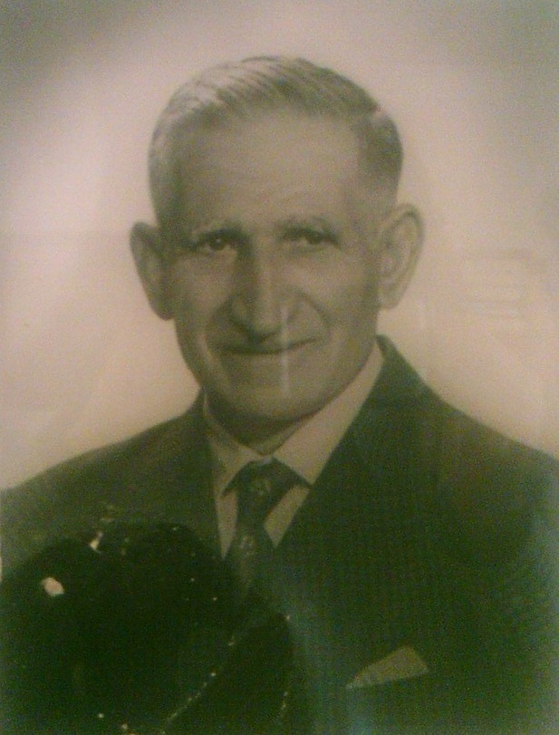
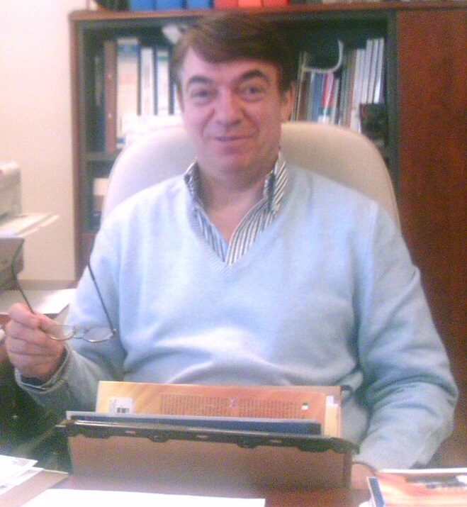
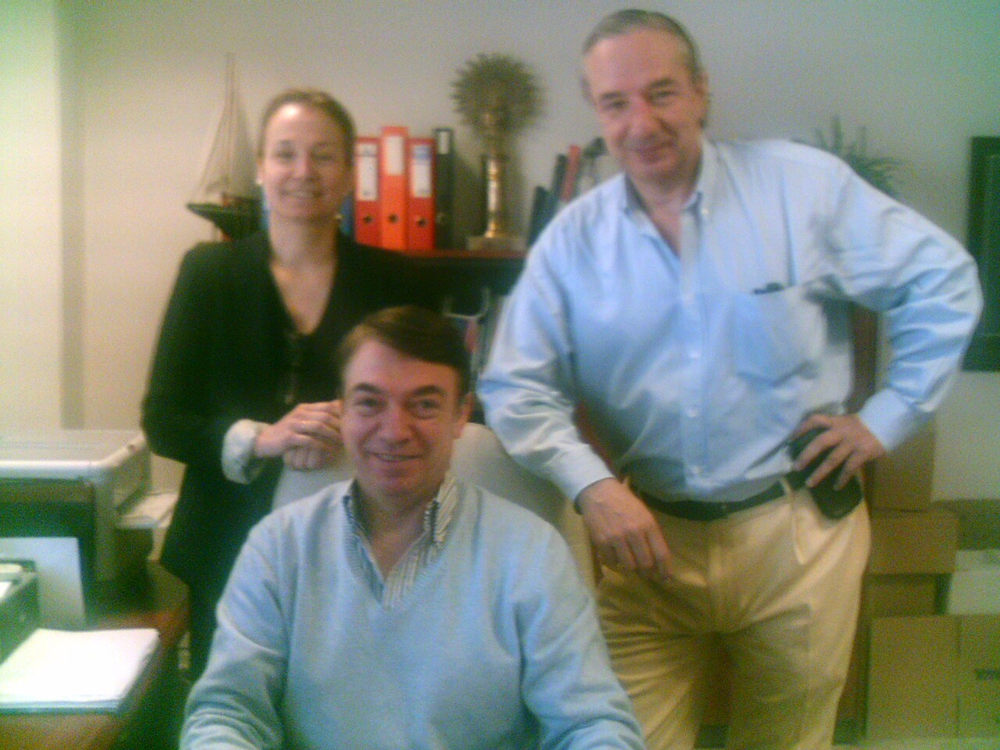

Desde 1924 fabricando Cajas de Cartón.

En el año 1924 un intrépido joven, llamado D. José Marcuello Catatán y oriundo de Daroca, decide emprender un negocio de Cajas de Cartón para zapatos, al observar la creciente demanda de envases de este tipo en la ciudad de Zaragoza.
Ya bajo la gerencia de D. Eduardo Marcuello Gutierrez, Cartonajes Marcuello comienza su crecimiento y expansión a otros sectores, como menaje, alimentación y textil, lo que provoca el traslado de la planta de manufactura, sita por aquel entonces en la Calle Cánovas, al polígono industrial de Valdefierro.
Un nuevo traslado llevaría la compañía a La Muela, dónde se haría cargo de la compañía D. Franciso Marcuello Albalat, siendo la tercera generación la que estabilizaría la producción e introduciría paulatinamente la tecnología en todo el proceso productivo y de gestión.
Finalmente, Cartonajes Marcuello sería trasladada al Polígono Industrial Empresarium, donde se encuentra en la actualidad, dando servicio a más de 1000 clientes y contando con una plantilla de 12 empleados.
Ofrecer a Pymes soluciones de packaging basadas en el Cartón, garantizando la integridad del producto embalado.